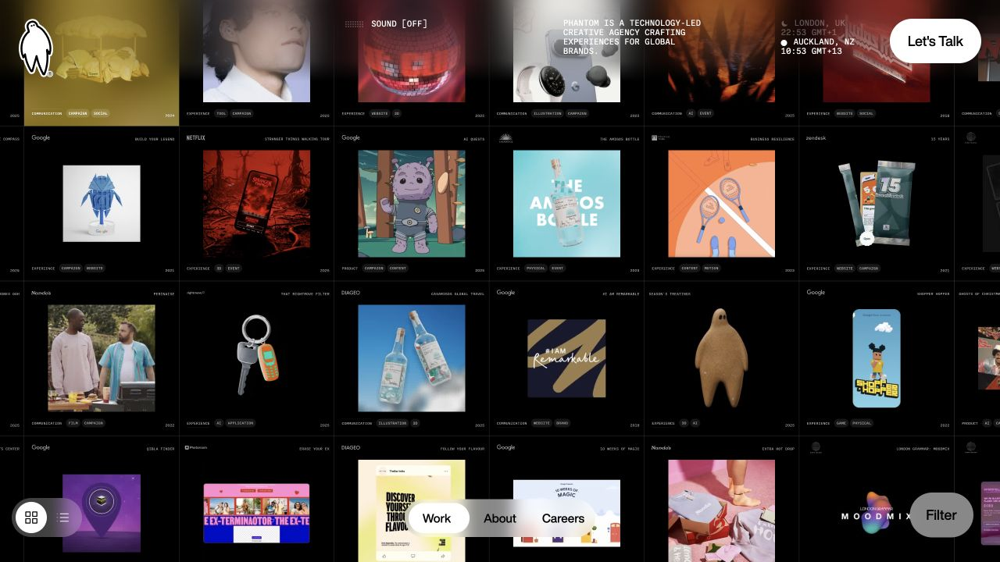
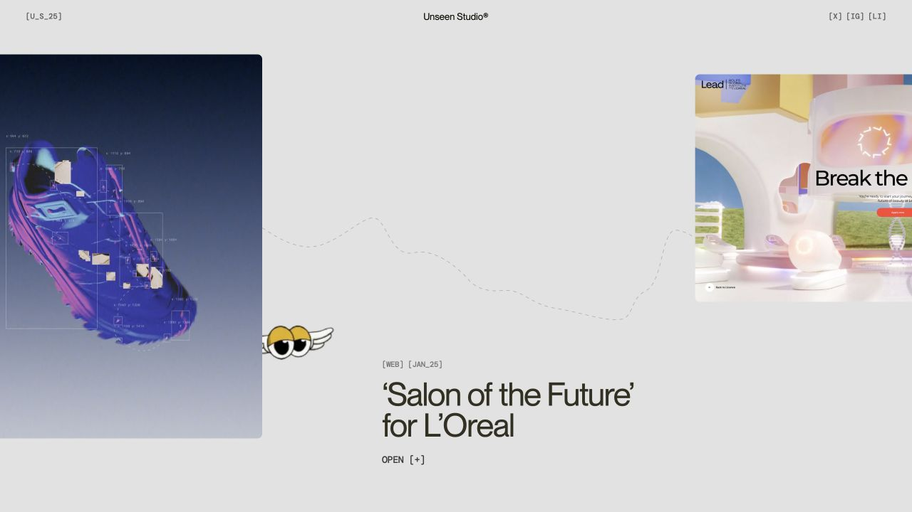
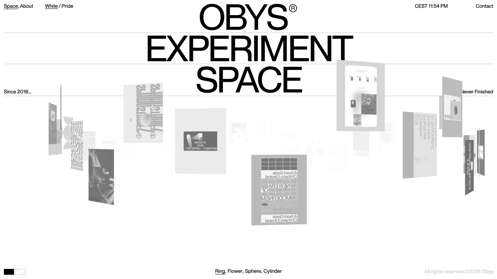
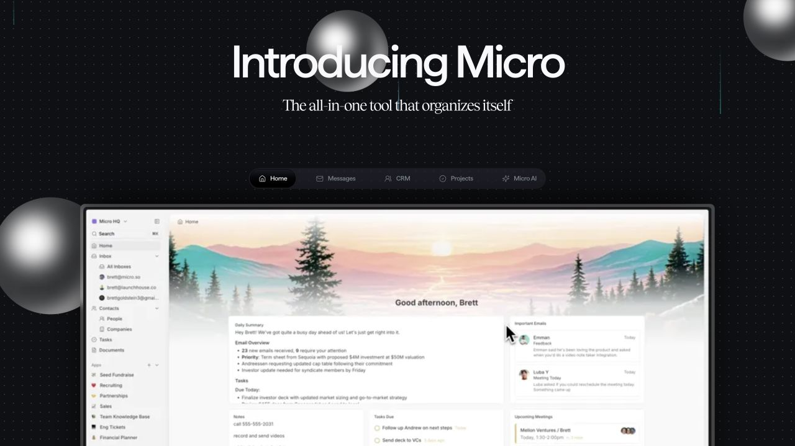
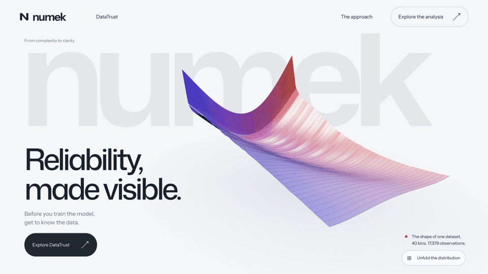
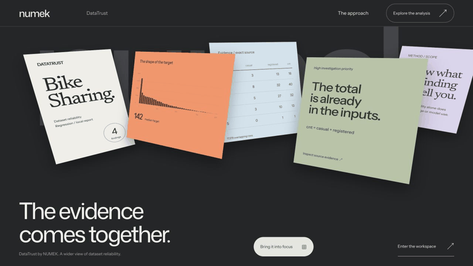

The previous studies reduced the references to big typography and clean panels. This pass works with the thing those references actually compose: the central subject, its depth, its transformation, and the change in reading distance.
These are revised direction proofs at the brief’s creative checkpoint. They include original live visuals, application/evidence treatments and measured chart content. They are not the completed five production prototypes.

The images sit on a curved spatial field. Perspective, different distances and edge crops establish a place to explore. Switching to list view turns the same body of work into a precise index.
Direction 05 opens an investigation as several evidence surfaces at different reading distances. “Bring it into focus” aligns them. The analytical workspace then keeps the source, distribution and finding flat.
Actual list-view capture · No Phantom project imagery is used in NUMEK.

The opening combines a textured field with staggered type. Early scrolling shifts the composition sideways into an oversized month label, then gives a project room to occupy the scene. Type and media have different jobs and change scale.
Direction 02 makes the source values small, the connection intermediate and the target monumental. The next row changes the whole relationship together. This borrows sequencing and reading distance, without reproducing the reference’s imagery or letter treatment.
Inspection scope: the opening and early sequence, not every month or linked project.

Oversized typography anchors the scene, while the project planes change arrangement through the shape controls. The About view replaces spatial exploration with a precise index and aligned reading lines.
Direction 03 uses the actual numerical relationship as its typography. Direction 05 changes the evidence arrangement through one explicit control. Neither adopts the archive as NUMEK’s product metaphor.
No claim is made about uninspected individual archive projects.

The opening gives its central visual a full frame and places the title asymmetrically. A quieter explanatory bridge changes the pace before the product enters as a large, readable object.
Direction 01 grants a data-derived surface the entire stage and then reveals the flat analytical distribution. Direction 04 makes source evidence the surrounding field and one row the focal reading surface. Both exchange the public effect for clear software.
The embedded product video was unavailable. Observations concern visible composition and scroll states; no landscape imagery or sphere assets are reused.

01 / The physical data form flattens while the labeled analytical view appears.

05 / The panorama aligns into reading surfaces.
Each preview consists of 18 sequential actual browser frames with beginning/end reading holds. These are sampled animations, not continuous high-frame-rate video or generated mockup motion.
| Direction | What it explores | What still needs work |
|---|---|---|
| 01 / Made visible | A data-derived brand object with a precise analytical counterpart. | The form must stay clearly an interpretation. Extend the story to capabilities beyond one histogram. |
| 02 / Nothing on faith | Source-to-finding relationships become a spatial narrative. | The arithmetic example needs a broader evidence sequence in a complete landing page. |
| 03 / Before the model | Actual values carry a forceful typographic identity. | Its public voice is deliberately loud; maintain quieter analytical reading surfaces. |
| 04 / Past the surface | An optical focus/context relationship becomes a guided reading interface. | Keep the lens tied to explicit source specimens; do not imply an implemented magnification feature. |
| 05 / Comes together | The investigation has several entry points with one coherent identity. | Spatial effects obscure detail until aligned. Keep the reading control and flat workspace immediate. |